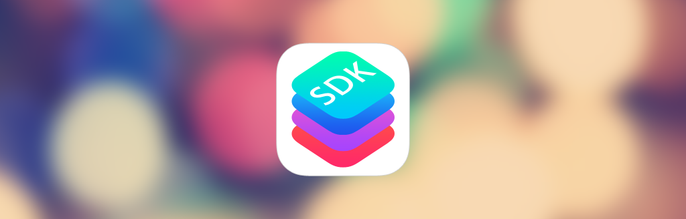

<!DOCTYPE html>
<html>
  <head>
    <meta charset="utf-8">
    <link href="http://nsmag.comquas.com/style/style.css" rel="stylesheet" type="text/css">
    <link href="http://mmwebfonts.comquas.com/fonts/?font=mon3" rel="stylesheet" type="text/css">
    <link href="http://cdnjs.cloudflare.com/ajax/libs/highlight.js/8.4/styles/default.min.css" rel="stylesheet" type="text/css">
    <link href="http://nsmag.comquas.com/style/tomorrow.css" rel="stylesheet" type="text/css">
    <script src="http://nsmag.comquas.com/js/highlight.pack.js"></script>
    <meta name="Description" content="iOS app development ၁ နှစ်တာ အတွေ့အကြုံ">
    <meta name="Keywords" content="nsmag,ios,android,magazine,myanmar">
    <script type="text/javascript">
      (function(w,d,t,u,n,s,e){w['SwiftypeObject']=n;w[n]=w[n]||function(){
        (w[n].q=w[n].q||[]).push(arguments);};s=d.createElement(t);
        e=d.getElementsByTagName(t)[0];s.async=1;s.src=u;e.parentNode.insertBefore(s,e);
        })(window,document,'script','//s.swiftypecdn.com/install/v1/st.js','_st');
        _st('install','kayVVh9MsqUzrz-J_3Hv');
        
        
    </script>
    <title>Experience on iOS Development within a Year
    </title>
  </head>
  <body>
    <header class="siteheader content">
      <div class="siteheader-menu">
        <div class="site-header-logo"><a href="http://nsmag.comquas.com" class="logo">NSMag</a></div>
        <ul class="site-header-menu-list">
          <li><a href="http://j.mp/1EGM7ti">iOS</a></li>
          <li><a href="http://j.mp/18fooGH">Android</a></li>
          <li><a href="http://nsmag.comquas.com/subscribe.html">Subscribe</a></li>
          <li>
            <form>
              <input id="search-input" type="text" class="st-search-input">
            </form>
          </li>
        </ul>
      </div>
    </header>
    <div id="detail" class="content">
      <h1>Experience on iOS Development within a Year</h1>
      <div class="description">iOS app development ၁ နှစ်တာ အတွေ့အကြုံ</div>
      <div class="author">ရေးသားသူ : <span class="authorname">ခန့်သူလင်း</span></div>
    </div>
    <div class="content detailArticle"><p>လွန်ခဲ့တဲ့ တစ်နှစ်က iOS App ကိုစလေ့လာခဲ့ပါတယ်။ ရေးချင်ခဲ့တာကြာပါပြီ။ ဒါပေမယ့် ကျောင်း project လုပ်နေရတာနဲ့ မရေးဖြစ်ခဲ့ပါ။ Poly ကျောင်းပြီးတော့ Uni မတက်ခင် စပ်ကြားမှာ စလေ့လာဖြစ်ခဲ့ပါတယ်။  မလေ့လာခင်မှာ iphone ကိုင်ခဲ့ဖူးတဲ့အတွက် iphone မှာ ဘယ်လို ပုံစံတွေရှိလဲဆိုတာ သတိအရင်စထားမိပါတယ်။ ကိုယ်တိုင် စရေးမယ်လုပ်တဲ့အခါ အိုင်ဖုန်းမှာ မြင်ခဲ့ဖူးတဲ့ tabview (အောက်မှာ tab  တွေရှိပြီး လိုအပ်တဲ့ viewဆီသွားနိုင်တဲ့ ပုံစံ) ကို  Program မှာဘယ်လိုခေါ်လဲဆိုတာတောင် မသိခဲ့ပါ။ ဝေါဟာရ အရင်မသိတဲ့အတွက် google  မှာအဲလိုရေးဖို့ tutorial ရှာဖို့အတွက်လည်း ခက်ခဲခဲ့ဖူးပါတယ်။  ထို့နောက် project  တစ်ခုအရင်စရေးကြည့်မယ့်ဟာကို ခဏထားလိုက်ပါတယ်။ အရင်ဆုံး လွယ်မယ်ထင်တဲ့ စာအုပ်ကို စဖတ်ကြည့်ပါတယ်။ Beginning iphone development စာအုပ်မျိုး စဖတ်ကြည့်ပါတယ်။  ထုံးစံအတိုင်း Hello World စရေးပါတယ်။  UIlabel   ဘယ်လိုခေါ်ရမလဲဆိုတာမျိုးစသိခဲ့ပါတယ်။ </p>
<p>ထို့နောက် တစ်ဆင့်တက်ပြီး အဲဒီစာအုပ် content ကိုဖတ်ကြည့်ပါတယ်။ Content page မှာ tableview, tabview, master-detail application တို့ရေးထားတာတွေ့မိတဲ့အခါ အဲဒါတွေရှာကြည့်ပါတယ်။ ကိုယ်လိုချင်တဲ့ ပုံစံမျိုးတွေ တွေ့လာပါတယ်။ လမ်းစက အဲကနေစရလာပါတယ်။ ဘာရှာရမလဲဆိုတာ သိလာပါတယ်။ tutorial ဆိုဒ်တွေမှာ ဘယ်လိုရေးရမလဲဆိုတာ စလေ့လာပါတယ်။ Tutorial ဖတ်ရတာပျင်းတဲ့အခါ source code လိုက် အရင် download ပြီးသူတို့ရဲ့ behavior ကိုလေ့လာဖြစ်ပါတယ်။ သူများတွေရဲ့ source code ကိုဖတ်နိုင်လာခဲ့တဲ့အချိန်မှာ နဲနဲလိပ်ပတ်လည်လာပါတယ်။
သူများ Program ကိုကြည့်ပြီး နဲနဲပြင်ရေးနိုင်လာတဲ့အချိန်မှာ ကိုယ့်ကိုယ်ပိုင် program တစ်ခုစရေးဖို့ပြင်ဆင်ခဲ့ပါတယ်။ ဘယ်သူတွေ ဘယ် လို program မျိုးရေးပြီးကြပြီလဲဆိုတာသိဖို့ app store မှာ Myanmar ဆိုပြီးရှာကြည့်ပါတယ်။ ဘယ် App တွေရှိလဲဆိုတာ သိလာပါတယ်။ ထို့နောက် ကိုယ်ပိုင် ဘာရေးရင်ကောင်းမလဲဆိုပြီး လွယ်မယ့်ဟာတစ်ခု ချရေးမိပါတယ်။ စရေးဖို့ ပြင်ဆင်တုန်းက မြန်မာ App တစ်ခုလောက်လုပ်ရင်ကောင်းမယ်ဆိုပြီး စဉ်းစားမိပါတယ်။ Browser တို့လိုရေးဖို့အတွက်ကျတော့ Beginner Level အတွက်မြင့်လောက်မယ်ထင်ပြီး မရေးဖြစ်ခဲ့ပါ။ Dictionary ရေးဖို့ လိုအပ်တဲ့ data ကိုအဲတုန်းက ဘယ်ကယူရမလဲ မသိတဲ့အတွက် မရေးဖြစ်ခဲ့ပါ။</p>
<p>ထို့နောက်တွင်မှု UITableView ကိုသုံးပြီး နိုင်ငံခြားသားတွေ မြန်မာစာပြောရာမှာ အထောက်အကူပြုနိုင်လောက်မယ့် <a href="http://bit.ly/1bLkGDs">MMSpeaker</a> ကိုရေးဖြစ်ခဲ့ပါတယ်။ App Store မှာ အလားတူ App တစ်ခုပဲ တွေ့မိပါတယ်။ လိုအပ်တဲ့ အသံသွင်းမှုတစ်ချို့လုပ်ခဲ့ပါတယ်။ ထို့နောက် ကိုယ့်ရဲ့ App အတွက် Specific Feature တစ်ခုကိုရေးဖို့စဉ်းစားရပါတယ်။ တခြား App မှာမတွေ့နိုင်လောက်တဲ့ Featureလိုမျိုးပါ။ အဲဒါအတွက် မြန်မာနာမည်ကို English လိုရေးပြီး (e.g. khant thu linn) မြန်မာလို အသံထွက်ပေးမယ့် Feature တစ်ခုထည့်ဖြစ်သွားပါတယ်။ ကိုယ်ရဲ့ App Unique ဖြစ်ဖို့ Specific feature လည်း အရေးကြီးပါတယ်။ MMSpeaker App ကတော့ ကိုယ်လုပ်ချင်တဲ့ App ကိုလုပ်ခဲ့တာပါ။ Market ဘက်ကိုအရင်စမကြည့်ဘဲ ကိုယ်ဘာလုပ်ချင်လဲအပေါ် စစဉ်းစားခဲ့တာပါ။</p>
<p>
အဲဒီနောက် ကျောင်းပြန်တက်ရသဖြင့် ios development နှင့် အဆက်နဲနဲပြတ်သွားပါတယ်။ <a href="http://on.fb.me/1bLkGTM">MMSpeaker</a> ကိုတော့ upgrade တွေလုပ်ဖြစ်ပါတယ်။ user တွေနဲ့ အဆက်မပြတ်ဖို့ fb page တစ်ခု create ထားသင့်ပါတယ်။</p>
<p>တစ်နှစ်ခန့်အကြာတွင် နောက်ထပ် App တစ်ခုလုပ်ဖို့စပြင်ဆင်ပါတယ်။ ဒီတစ်ခေါက်တွင် Market ထဲတွင် similar app မရှိသေးသည့် app ကိုစစဉ်းစားပါတယ်။ ထို့နောက် <a href="http://bit.ly/14Pyeux">MMSubPlayer</a> ကိုစလုပ်ဖြစ်ပါတယ်။ မြန်မာစာ (subtitle) နှင့် ရုပ်ရှင်ကြည့် MV ကြည့်နိုင်သည့် App မျိုးပါ။ စလုပ်သည့်အခါတွင် အရင်ကလို default button, default label တွေသုံးတာမျိုးကို မလုပ်တော့ဘဲ customize တွေလုပ်ဖြစ်ပါတယ်။ အနည်းဆုံး uibutton နဲ့ background ကိုစပြောင်းပါတယ်။ Default UIButton , UILabel တွေက စလုပ်ခါစအတွက်မှာ အဆင်ပြေပေမယ့် နောက်ပိုင်း တခြား App တွေနှင့် နှိုင်းယှဉ်လာရသည့်အခါတွင် Design အောက်ပါတယ်။ ပြင်ဆင်နိုင်သည့် နေရာများမှာ structure of app (single view, master-detail, etc), custom xib file, background ၊ uitableviewcell စသဖြင့် ရှိပါတယ်။</p>
<p>
Tutorial ဆိုဒ်၊ source code ရနိုင်မယ့်နေရာ နှင့် template site တစ်ချို့ကို ဖော်ပြထားပါတယ်။</p>
<p><a href="http://bit.ly/1bLkGTQ">Raywenderlich (Tutorial)</a> </p>
<p>Beginner Level  မှ High level အထိ Tutorial ကောင်းများရှိပါတယ်။ Source code  များကိုလည်း download နိုင်ပြီး App သဘောသဘာဝများကိုလည်း သေချာရှင်းပြထားပါတယ်။</p>
<p><a href="http://bit.ly/1bLkJix">Github (Source code)</a></p>
<p>သူ့ရဲ့ search ကနေတစ်ဆင့်  iPhone iPad project  များကိုရှာနိုင်ပါတယ်။ သူကတော့ developer ပေါင်းများစွာက  share လေ့ရှိတဲ့ Site ဆိုတော့ project  စုံပါတယ်။ </p>
<p><a href="http://bit.ly/1bLkJiD">App Design Vault  (Design Template)</a></p>
<pre><code> iOS Design  Template များကိုဝယ်ယူနိုင်ပါတယ်။ ဈေးကြီးပေမယ့် design များကလှပါတယ်။ အကယ်၍ မဝယ်ဖြစ်ရင်တောင် သူများ design ကောင်းများကိုလေ့လာနိုင်တဲ့ နေရာတစ်ခုပါ။
</code></pre><p><a href="http://bit.ly/1bLkJyX">iOS User Interface Controls (UI Custom Control)</a> , <a href="http://bit.ly/1bLkJz4">Cocoa Controls/ (UI Custom Control)</a></p>
<p> UIbutton , UIlabel, gauge, switch, table စသဖြင့်  custom control ပေါင်းများစွာကို စုထားပါတယ်။ အခမဲ့ download နိုင်ပါတယ်။</p>
<p><a href="http://bit.ly/1bLkK61">Dribble</a> , <a href="http://bit.ly/1bLkK6b">Pixeden</a> , <a href="http://bit.ly/1bLkKmq">Psdcovers</a> <p></p>
<p><p>iPhone iPad App များကို  design ဆွဲရာတွင်ဖြစ်စေ ၊ App ရေးပြီးသွား၍ ကြော်ငြာလိုသည့်အခါ တွင်ဖြစ်စေ သုံးနိုင်ပါတယ်။ မိမိ App ကို  screenshot ရိုက်ပြီး သူတို့ရဲ့ template ထဲထည့်လိုက်ပါ။ image quality လည်းမကျပါဘူး။</p>
<p>iPhone, iPad App များရေးရာတွင် အသုံးပြုရလွယ်သည့်၊ အထောက်အကူပြုမည့် software  များကိုဖော်ပြလိုက်ပါတယ်။</p>
<p><a href="http://bit.ly/1bLkKmr">Pixelmator </a></p>
<p>Photoshop လိုအသုံးပြုနိုင်သည့် software ပါ။ ပုံများကိုအလွယ်တကူပြင်နိုင်ပါတယ်။ Photoshop ဖိုင် - psd ဖိုင်အဖြစ်လည်း ထုတ်ပေး/ဖွင့် နိုင်ပါတယ်။ </p>
<p>
<a href="http://bit.ly/1bLkKms">Omnigraffle professional</a></p>
<p>App  တစ်ခုကို စမရေးခင် brainstorming လုပ်လေ့ရှိပါတယ်။ ထိုအခါ App  design ကို လက်ဖြင့်ချဆွဲသည်ဖြစ်စေ၊ ကွန်ပြူတာပေါ်တွင်ဖြစ်စေ ဆွဲလေ့ရှိပါတယ်။ ကွန်ပြူတာပေါ်တွင် design ကောင်းများကိုဆွဲလိုလျှင်  Omnigraffle professional ကိုသုံးနိုင်ပါတယ်။ iPhone, iPad stencil များကို အလွယ်တကူ download နိုင်ပြီး drag and drop ဆွဲနိုင်ပါတယ်။</p>
<p><a href="http://bit.ly/1bLkMuL">Paintcode</a></p>
<p><p>App များကို ပေးထားတဲ့ label , button များကိုသုံးနိုင်သလို ကိုယ်ကိုတိုင်လည်း Program အရဆွဲနိုင်ပါတယ်။ သို့သော် Program ကို ကိုယ်တိုင်ရေးဖို့ ခက်ခဲနိုင်ပါတယ်။ ထိုအခါ Paintcode  ကိုသုံးနိုင်ပါတယ်။ Paintcode ဖြင့် ပုံများကို ရေးဆွဲပြီး ထိုမှ code  များကို copy/paste လုပ်နိုင်ပါတယ်။</p>
<p>
<a href="http://bit.ly/1bLkKmz">Prepo (app icon generator)</a></p>
<p>App များတွင် အမြဲလိုလို အလုပ်နဲနဲရှုပ်တာက  app icon  လုပ်တာပါ။ retina, normal, iphone, ipad စသဖြင့် size မျိုးစုံကို ထုတ်ပေးရပါတယ်။ ကိုယ်ကိုယ်တိုင်  resize လုပ်လည်းရပါတယ်။ Auto လုပ်ချင်ရင်တော့ Prepo ကိုသုံးနိုင်ပါတယ်။</p>
<p>
<a href="http://bit.ly/1bLkKmC">Art text 2</a></p>
<p>တစ်ခါတစ်လေ ကိုယ့်  Program မှာ custom button , label တွေလုပ်ချင်လာတယ်။ ကိုယ်ကလည်း ပုံကို မဆွဲတတ်ဘူးဆိုရင် art text 2 ကိုသုံးနိုင်ပါတယ်။ အသုံးများတဲ့ ပုံတွေရှိပါတယ်။ Design ဆွဲရတာ၊ အရောင်ချိန်ရတာတွေ လွယ်ပါတယ်။</p>
<p>အထက်ပါ app တွေနဲ့ link တွေက iOS development စလုပ်တဲ့ လူတွေအတွက် အသုံးဝင်ပါလိမ့်မယ်။</p>

    </div>
    <script>hljs.initHighlightingOnLoad();</script>
    <script src="http://www.comquas.com/comquas_ads.js"></script>
    <div class="line"></div>
    <div id="comquas-ads" class="content"></div>
    <footer class="endline content">© <a href="http://www.comquas.com">COMQUAS </a>2015</footer>
  </body>
</html>